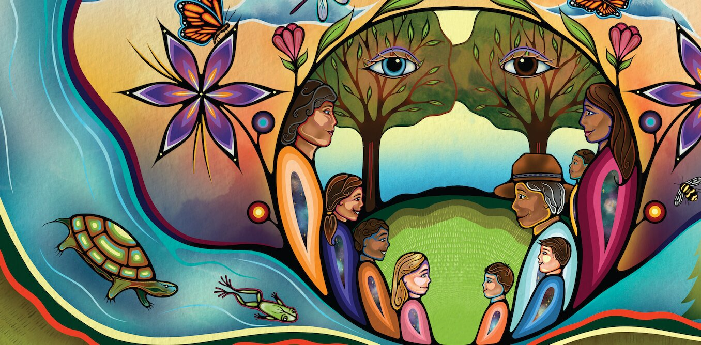
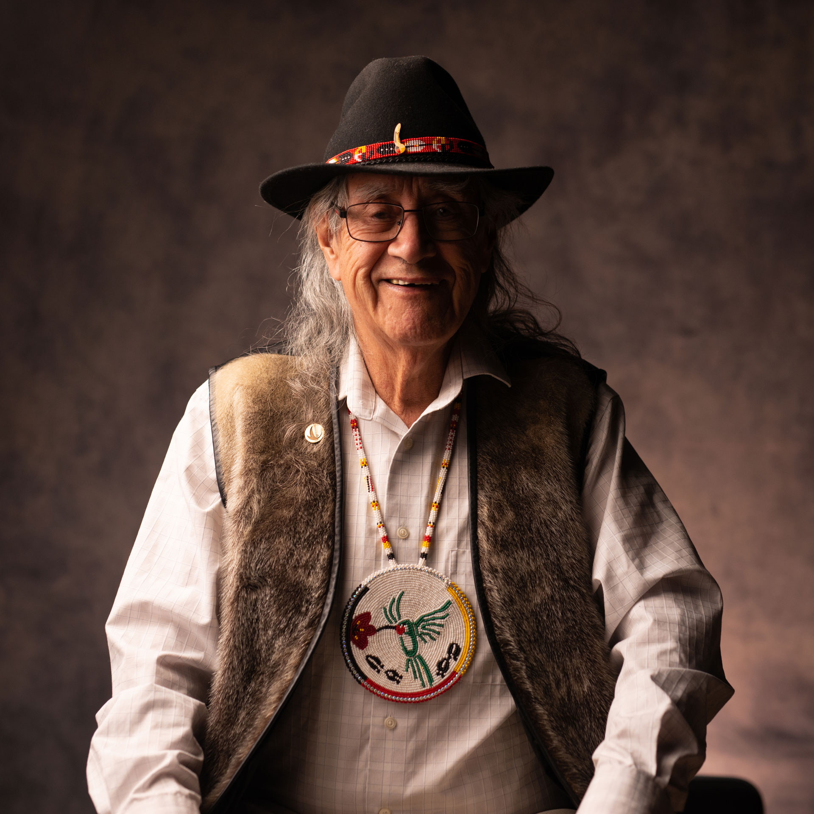

SOC122 · Weekly Experience
Everything you do in SOC122 sits inside one stance. This week you learn what it is, who offered it, and what it asks of you: to see with both eyes, and to keep each one whole.

Last week you met the social sciences as a way of seeing. This week names the stance you will carry through every one after it. It is not a topic you finish and leave behind. It is the posture you read everything else from.
The idea is a gift from a named knowledge holder. Naming him keeps Two-Eyed Seeing from flattening into a slogan.

Etuaptmumk, Two-Eyed Seeing, comes from Mi'kmaw Elder Albert Marshall. He asks you to learn to see with one eye the strengths of Indigenous ways of knowing, and with the other eye the strengths of Western ways of knowing, and, most of all, to use both eyes together, for the benefit of all.
The gift is his. Using it well begins with saying whose teaching it is.
You do not blend the two into one blurred picture, and you do not treat Western knowledge as the default that Indigenous knowledge gets added to. Each eye stays whole. The skill is holding both open at once.
To understand why holding both is work, you also read Leroy Little Bear. He shows that Indigenous and Eurocentric worldviews differ at their philosophical roots. They are not two versions of the same picture. They reach the world through different assumptions about time, relationship, and reality.
So this week you practise something specific: keeping two whole ways of knowing in view at once, without collapsing one into the other, and without ranking them.
Work the assigned sources on Blackboard: Marshall on Two-Eyed Seeing, the sociology introduction, and Little Bear on worldview.
Put the stance in your own words. Who offered it, and what does each eye bring?
Begin a one-page note that answers a single question: whose way of seeing, and what does each eye let you see?
Carry one question forward, not an answer. How does your responsibility change when you name the knowledge holder?
What becomes possible when Indigenous and Western knowledges are held together, each kept whole?
Elder Albert Marshall's teaching of Two-Eyed Seeing (Etuaptmumk): use the strengths of both Indigenous and Western knowledge together, for the benefit of all.
Marshall, A. (Mi'kmaw Elder). On Two-Eyed Seeing.
Indigenous and Eurocentric worldviews differ at their roots, in how they understand time, relationship, and reality. They are not two versions of one picture.
Little Bear, L. Jagged Worldviews Colliding.
Come to the live class able to name the stance, say whose teaching it is, and describe what each eye brings. Bring your one open question.
Return to the courseA teaching experience. Blackboard remains the official SOC122 platform for readings, assignment submission, deadlines, and grades.